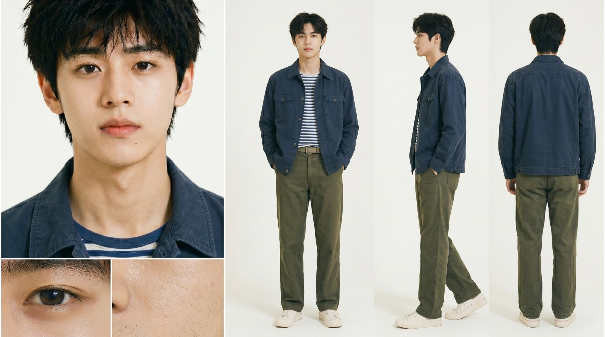
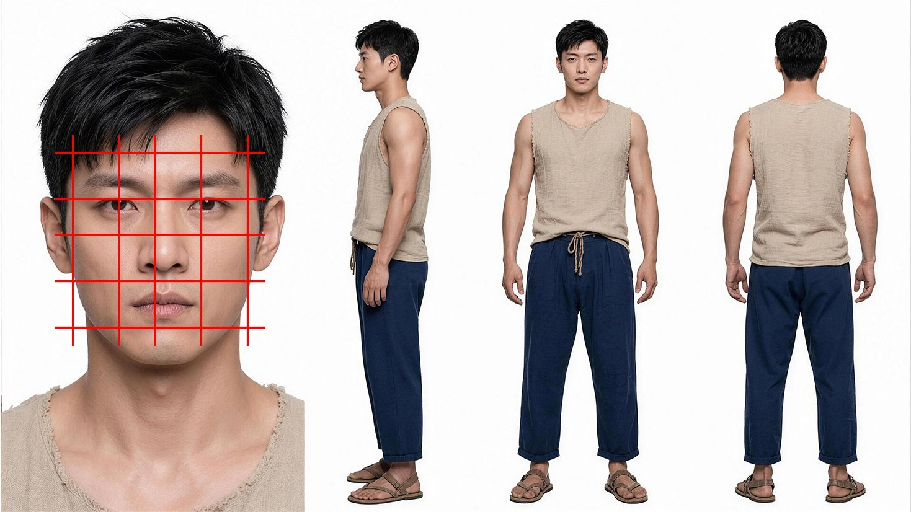
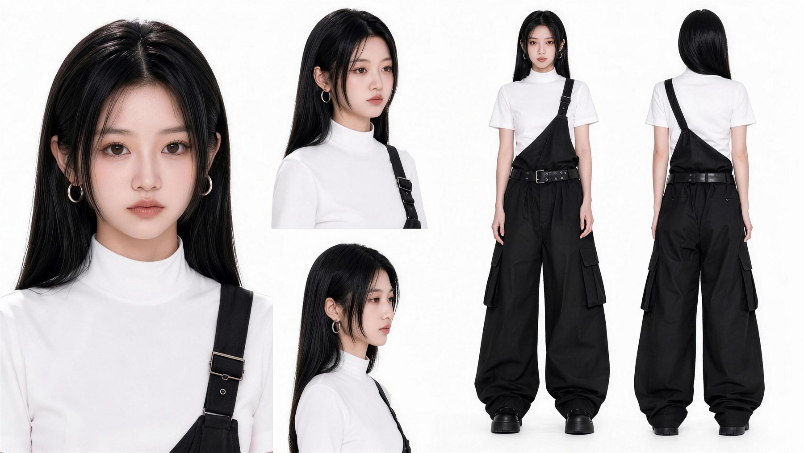
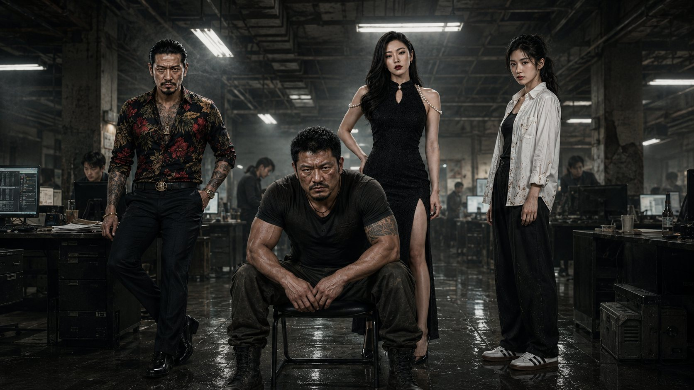
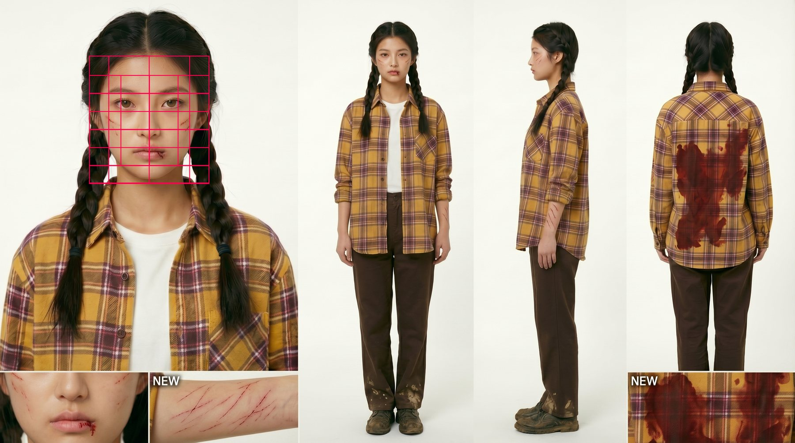
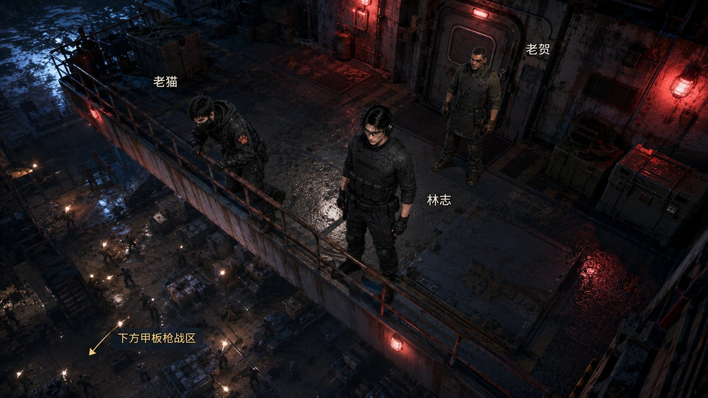
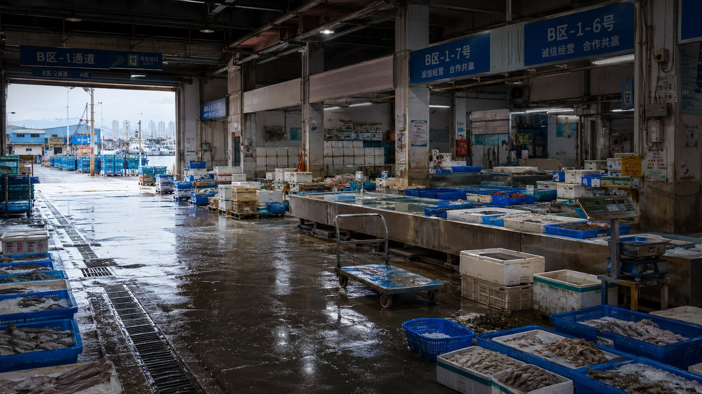

被弃深山，白虎报恩助我赶山暴富
第 34 集 · 完整成片 · 竖屏影像
张佳楠个人作品集 · 2026
AI 漫剧导演 / AIGC 视觉设计师
10 年以上视觉设计经验，专注 AI 漫剧全流程创作。
ABOUT ME / 个人介绍
AI DRAMA DIRECTOR · VISUAL DESIGNER
我拥有 10 年以上 UI/UX、品牌视觉、电商视觉与网页设计经验。 现在专注 AI 漫剧创作，把设计审美、商业理解与 AIGC 工作流结合起来， 从剧本拆解、角色场景设定，到分镜、动态生成和成片交付，全程参与。
SELECTED WORKS / 2026
第 34 集 · 完整成片 · 竖屏影像
第 35 集 · 完整成片 · 竖屏影像
第 74 集 · 完整成片 · 竖屏影像
第 75 集 · 完整成片 · 竖屏影像
第 31 集 · 完整成片 · 竖屏影像
第 32 集 · 完整成片 · 竖屏影像
SCREENING ROOM / 作品放映室
SEPTEMBER PREMIERES · 2026
两部九月新作，三部往期精选。进入不同的故事世界，观看完整剧集。
NEW RELEASE 01 / 02
第 59 集 · 完整成片
点击播放，进入故事。
支持全屏观看与进度控制。
NEW RELEASE 02 / 02
趣味片段 · 精选剪辑
点击播放，进入故事。
支持全屏观看与进度控制。
第 59 集 · 完整成片
第 38 集 · 完整成片
第 45 集 · 完整成片
PRODUCT FILMS / 商业影像
DETAILS IN MOTION
用影像呈现产品细节与使用过程。两部完整作品，点击即可观看。
01 / PRODUCT SHOWCASE 00:54
02 / PRODUCT SHOWCASE 00:46
PRODUCTION SYSTEM
从剧本覆盖到成片验收
按集、场、时段、内外景与剧情功能拆开剧本，区分实际入镜地点和台词提及地点，确保没有漏场或重复建设。
QUALITY GATES / 质量门槛
镜头数量随冲突密度变化；完整保留人物关系、台词与动作结果，再拆成适合 AI 生成的连续小段。
真人电影、东方 3D 国漫、中式民俗定格分别建立视觉圣经，不让通用风格覆盖项目自身气质。
从痛点与视觉钩子进入，用产品亮相、卖点证据、使用过程和结果完成清晰转化叙事。
按 9:16、16:9 或 1:1 重新组织构图、字幕安全区和观看节奏，不做简单机械裁切。







ABOUT / CAPABILITIES
EXPERIENCE → AI PRODUCTION
拥有 10 年以上 UI/UX、品牌视觉、电商视觉与网页设计经验， 现在专注 AI 漫剧创作和 AIGC 视觉工作流。擅长把审美、商业理解与新工具连接起来， 形成稳定、可复用、能交付的内容生产方式。
OPEN FOR COLLABORATION
有故事、有产品，或者有一个还没被看见的想法？
我们可以从第一帧开始。
NOW PLAYING